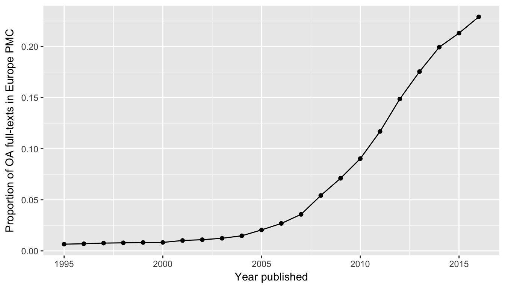
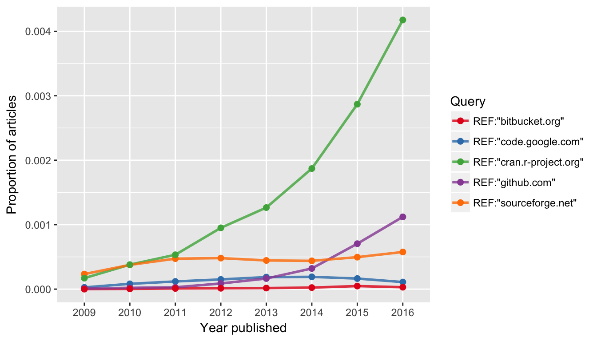

Trend graphs in literature reviews show the development of concepts in scholarly communication. Some trend graphs, however, don’t acknowledge that the number of scholarly publications is growing each year, but simply display the absolute number of hits they have found for a given concept. Noam Ross called these misleading graphs evergreen review graphs because of their enduring popularity in review papers. Examples can be found on Twitter under the Hashtag #evergreenreviewgraph.
This vignette guides you how to make proper trend graphs when reviewing Europe PMC literature. In these graphs, the number of hits found is divided by the total number of records indexed in Europe PMC for a given search query.
epmc_hits_trend()
We use epmc_hits_trend() function, which was firstly introduced in Maëlle Salmon’s blog post about “How not to make an evergreen review graph”1. The function takes a query in the Europe PMC search syntax2 and the period of years over which to perform the search as arguments, and returns a data-frame with year, total number of hits (all_hits) and number of hits for the query (query_hits).
library(europepmc)
europepmc::epmc_hits_trend(query = "aspirin", period = 2010:2016)
#> # A tibble: 7 x 3
#> year all_hits query_hits
#> <int> <dbl> <dbl>
#> 1 2010 849133 6717
#> 2 2011 901186 7297
#> 3 2012 943434 8299
#> 4 2013 1000958 9267
#> 5 2014 1054694 9996
#> 6 2015 1118459 10814
#> 7 2016 1097516 9981By default, synonym search is disabled and only Medline/PubMed index is searched.
There is a growing interest in knowing the proportion of open access to scholarly literature. Europe PMC allows searching for open access content with the OPEN_ACCESS:Y parameter. At the moment, Europe PMC contains 1,809,023 open access full-texts. Let’s see how they are relatively distributed over the period 1995 - 2016.
tt_oa <- europepmc::epmc_hits_trend("OPEN_ACCESS:Y", period = 1995:2016, synonym = FALSE)
tt_oa
#> # A tibble: 22 x 3
#> year all_hits query_hits
#> <int> <dbl> <dbl>
#> 1 1995 448144 2866
#> 2 1996 457900 3082
#> 3 1997 455662 3235
#> 4 1998 473286 3399
#> 5 1999 492990 3429
#> 6 2000 531375 3835
#> 7 2001 544462 4601
#> 8 2002 560839 5351
#> 9 2003 587527 6137
#> 10 2004 627139 8225
#> # ... with 12 more rows
# we use ggplot2 for plotting the graph
library(ggplot2)
ggplot(tt_oa, aes(year, query_hits / all_hits)) +
geom_point() +
geom_line() +
xlab("Year published") +
ylab("Proportion of OA full-texts in Europe PMC")
Be careful with the interpretation of the slower growth in the last years because there are several ways how open access content is added to Europe PMC including the digitalization of back issues.3
Another nice use case for trend graphs is to study how code and software repositories are cited in scientific literature. In recent years, it has become a good practice not only to re-use openly available software, but also to cite them. The FORCE11 Software Citation Working Group states:
In general, we believe that software should be cited on the same basis as any other research product such as a paper or book; that is, authors should cite the appropriate set of software products just as they cite the appropriate set of papers. (doi:10.7717/peerj-cs.86)
So let’s see whether we can find evidence for this evolving practice by creating a proper review graph. As a start, we examine these four general purpose hosting services for version-controlled code:
and, of course, CRAN, the R archive network.
We only want to search reference lists. Because Europe PMC does not index references for its complete collection, we use has_reflist:y to restrict our search to those publications with reference lists. These literature sections can be searched with the REF: parameter.
Let’s prepare the queries for links to the above mentioned code hosting services:
dvcs <- c("code.google.com", "github.com",
"sourceforge.net", "bitbucket.org", "cran.r-project.org")
# make queries including reference section
dvcs_query <- paste0('REF:"', dvcs, '"')and get publications for which Europe PMC gives access to reference lists for normalizing the review graph.
library(dplyr)
my_df <- purrr::map_df(dvcs_query, function(x) {
# get number of publications with indexed reference lists
refs_hits <-
europepmc::epmc_hits_trend("has_reflist:y", period = 2009:2016, synonym = FALSE)$query_hits
# get hit count querying for code repositories
europepmc::epmc_hits_trend(x, period = 2009:2016, synonym = FALSE) %>%
dplyr::mutate(query_id = x) %>%
dplyr::mutate(refs_hits = refs_hits) %>%
dplyr::select(year, all_hits, refs_hits, query_hits, query_id)
})
my_df
#> # A tibble: 40 x 5
#> year all_hits refs_hits query_hits query_id
#> <int> <dbl> <dbl> <dbl> <chr>
#> 1 2009 791964 521650 13 "REF:\"code.google.com\""
#> 2 2010 849133 506656 40 "REF:\"code.google.com\""
#> 3 2011 901186 562329 66 "REF:\"code.google.com\""
#> 4 2012 943434 594837 91 "REF:\"code.google.com\""
#> 5 2013 1000958 729980 136 "REF:\"code.google.com\""
#> 6 2014 1054694 767467 141 "REF:\"code.google.com\""
#> 7 2015 1118459 755002 119 "REF:\"code.google.com\""
#> 8 2016 1097516 698762 61 "REF:\"code.google.com\""
#> 9 2009 791964 521650 4 "REF:\"github.com\""
#> 10 2010 849133 506656 10 "REF:\"github.com\""
#> # ... with 30 more rows
### total
hits_summary <- my_df %>%
group_by(query_id) %>%
summarise(all = sum(query_hits)) %>%
arrange(desc(all))
hits_summary
#> # A tibble: 5 x 2
#> query_id all
#> <chr> <dbl>
#> 1 "REF:\"cran.r-project.org\"" 8088
#> 2 "REF:\"sourceforge.net\"" 2197
#> 3 "REF:\"github.com\"" 1603
#> 4 "REF:\"code.google.com\"" 667
#> 5 "REF:\"bitbucket.org\"" 101The proportion of papers where Europe PMC was able to make the cited literature available was 66 for the period 2009-2016. There also seems to be a time-lag between indexing reference lists because the absolute number of publication was decreasing over the years. This is presumably because Europe PMC also includes delayed open access content, i.e. content which is not added immediately with the original publication.4
Now, let’s make a proper review graph normalizing our query results with the number of publications with indexed references.
library(ggplot2)
ggplot(my_df, aes(factor(year), query_hits / refs_hits, group = query_id,
color = query_id)) +
geom_line(size = 1, alpha = 0.8) +
geom_point(size = 2) +
scale_color_brewer(name = "Query", palette = "Set1")+
xlab("Year published") +
ylab("Proportion of articles in Europe PMC")
Although this figure illustrates the relative popularity of citing code hosted by CRAN and GitHub in recent years, there are some limits that needs to be discussed. As said before, Europe PMC does not extract reference lists from every indexed publication. It furthermore remains open whether and to what extent software is cited outside the reference section, i.e. as footnote or in the acknowledgements.
Another problem of our query approach is that we did not consider that DOIs can also be used to cite software, a best-practice implemented by Zenodo and GitHub or the The Journal of Open Source Software.
Lastly, it actually remains unclear, which and what kind of software is cited how often. We could also not control if authors just cited the homepages and not a particular source code repository. One paper can also cite more than one code repository, which is also not represented in the trend graph.
To conclude, a proper trend graph on the extent of software citation can only be the start for a more sophisticated approach that mines links to software repositories from scientific literature and fetches metadata about these code repositories from the hosting facilities.
This vignette presented first steps on how to make trend graphs with europepmc. As our use-cases suggest, please carefully consider how you queried Europe PMC in the interpretation of your graph. Although trend graphs are a nice way to illustrate the development of certain concepts in scientific literature or recent trends in scholalrly communication, they must be put in context in order to become meaningful.
Europe PMC Search Syntax: https://europepmc.org/Help#mostofsearch↩
See section “Content Growth” in: McEntyre JR, Ananiadou S, Andrews S, et al. UKPMC: a full text article resource for the life sciences. Nucleic Acids Research. 2011;39(Database):D58–D65. https://doi.org/10.1093/nar/gkq1063.↩
Ebd.↩